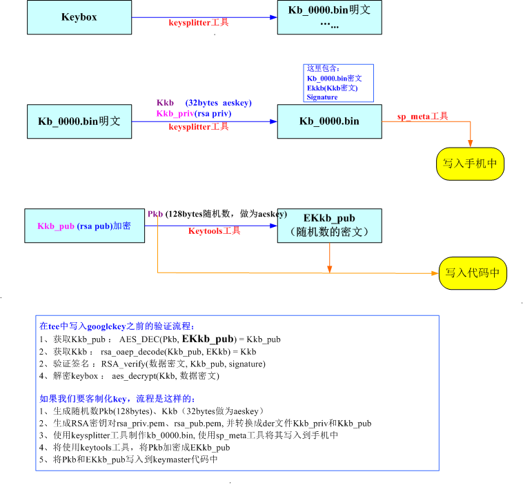

Google Key存储加密
Google Key也就是Key Attestation
参考文档
什么是google attestation key
attestation key就根据当前手机型号(id)，相关google申请的一组keybox,然后将keybox拆分成若干组key, 每组包含ECDSA和RSA，每组key写入到手机的安全内存中
当google GSM app或第三方APP需要使用时，调用keymaster接口，使用该key进行签名认证等
存储Goolge Key加密方式
MTK加密设计流程图，部分数据采用AES加密（证书），重要的数据采用RSA加密或者签名（AES密钥）
Kkb: AES密钥，随机数
Pkb: Parameters of Crypto Engine for Key Block Operation，和Kkb一样的随机数
Kkb_pri: ras私钥
Kkb_pub: Key Block Verification Key
EKkb_pub: Encrypted Key Block Verification Key
那么我们申请到keybox，要拆分keybox，然后将key组(ECDSA和RSA)写入到手机的安全区域中。这其中的设计思想就是什么，我们要怎样保护key组(ECDSA和RSA)的安全性？
